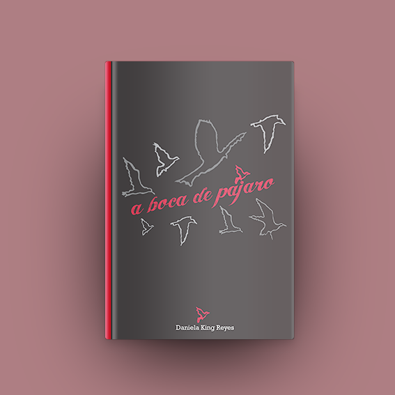

A boca de pájaro |
A boca de pájaro is a poetry book that delves into the delicate intersections of language, nature, and human experience. This project, under the direction of Claudia Tardito, involved crafting a visual narrative that complemented the themes of the poetry and created a reading experience that resonated with the book’s emotional depth.
The work was published by Editorial Letrarte, further cementing its commitment to the professionalization of editorial processes in regional literature.
Design Process
- Conceptualization: Developed a design concept that mirrored the lyrical and contemplative nature of King’s poetry, evoking intimacy, fragility, and connection to the natural world.
- Layout & Typography: Selected typography and layout treatments that enhanced readability and reflected the contemplative mood of the poems.
- Imagery & Graphics: Incorporated subtle, nature-inspired illustrations and textures that reinforced the poetry’s themes without overshadowing the words.
- Production: Oversaw the production process, ensuring paper, binding, and finish enhanced the reader’s tactile and visual experience.
Results
- 🚀 A visually harmonious poetry book that captured the essence of A boca de pájaro through thoughtful design.
- 🚀 Layout and typography reflected the emotional and thematic depth of Daniela King’s poems.
- 🚀 Positive reception from critics and readers, who appreciated the synergy between poetry and presentation.
- 🚀 Strengthened Editorial Letrarte’s reputation for high-quality, locally-focused literary works.

The design of A boca de pájaro served as a perfect complement to Daniela King’s evocative poetry, offering a visual experience that enhanced the book’s emotional and thematic impact. This project exemplified the role of thoughtful design in editorial work, showcasing the power of a well-crafted layout to elevate a literary piece.
📌 More Info: @editorial_letrarte